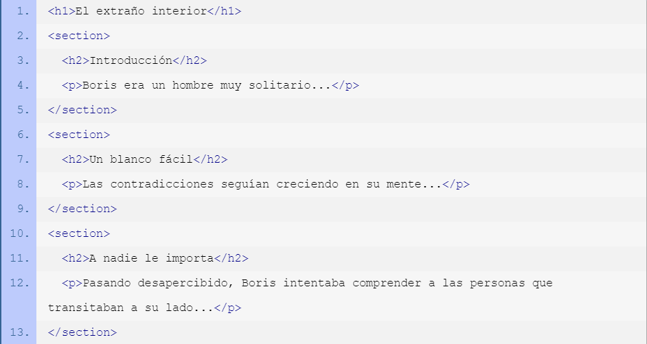
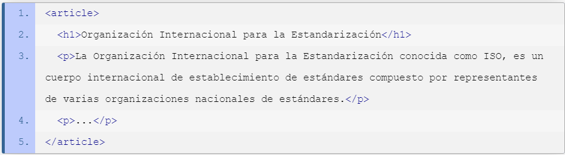

|
|
Contenido en HTML(Section,Aside,Footer,Article) |
|
El elemento section es un elemento de seccionamiento genérico, diseñado para contener una parte de un documento temáticamente definida. Los contenidos de un elemento section son usualmente precedidos por un encabezado. Los autores usualmente recurren al elemento section para dividir un documento extenso en capítulos, para separar las diferentes pestañas en un aplicación o para dividir temáticamente las secciones de un documento (sección de anuncios, sección de últimos artículos publicados, sección de vinculos relacionados, etc.). Siendo section un elemento genérico, es aconsejable usar otros elementos (como main, header, footer, article, aside o nav) con significados más específicos, siempre que fuera posible. EjemploEn el siguiente ejemplo el elemento section es usado para encerrar los diferentes capítulos de un documento, lo que constituye un uso muy común. Nota cómo, en este caso particular, cada elemento section comienza con su propio elemento de encabezado. Aunque no es requerido, esto es algo muy típico dada la naturaleza del elemento y su propósito. El elemento article es un contenedor de bloques de contenido que se consideran independientes del sitio web y pueden, por lo tanto, ser vistos, reutilizados y distribuidos por separado, como por ejemplo, en la sindicación. Puedes encontrar habitualmente a este elemento encerrando artículos, entradas de blogs o mensajes de un foro. Cuando dos o más de estos elementos están anidados, se supone que el elemento article interior guarda relación con el elemento article que actúa como padre. Este podría ser el caso de una entrada de blog (siendo en sí misma un article), donde cada comentario puede estar encerrado por un elemento article. El elemento article puede ser utilizado en conjunto con otros elementos como header, footer y time para agregar información acerca de su contenido. Esta información puede ser utilizada, por ejemplo, por navegadores o lectores de noticias. No debes confundir los elementos article y section. El elemento article tiene un mayor significado e implica que sus contenidos pueden ser tratados independientemente del documento que los contiene. EjemploEl siguiete ejemplo muestra un uso básico del elemento article. Dentro de éste, podemos ver únicamente un título y un par de párrafos. Sin embargo, este contenido califica como independiente y puede ser tratado por separado y aún tener sentido.  |
Esta informacion fue obtenida de las siguente pagina: